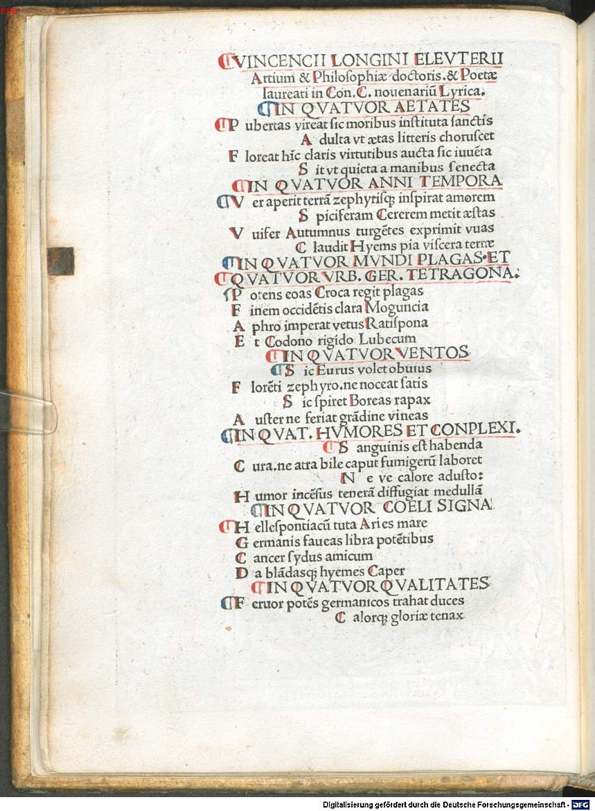
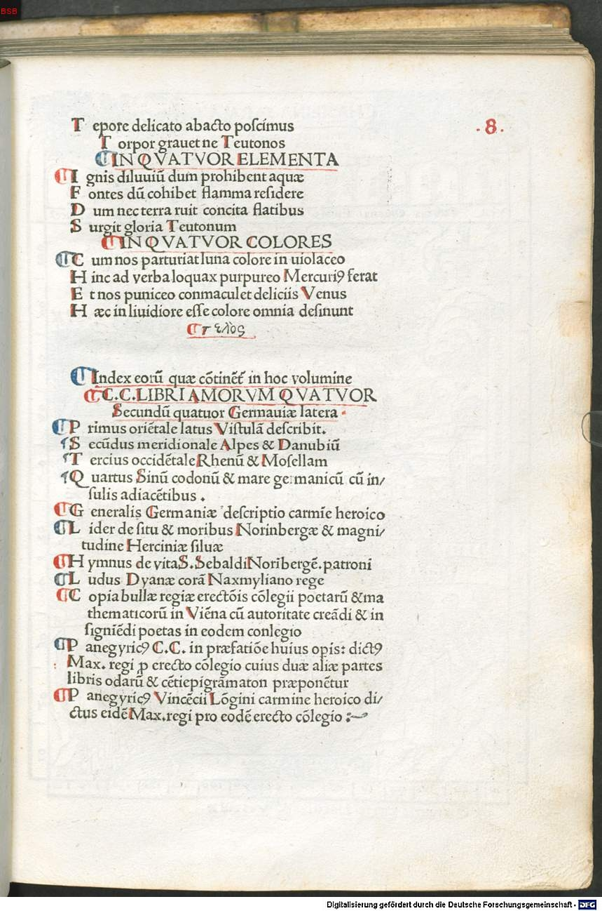

Celtis 1 (Vincenz Lang)
Faksimile


Transkription
Vincencii Longini Eleuterii Artium et Philosophiae doctoris et Poetae laureati in Conradum Celtem novenarium Lyrica.
In quattuor aetatesPubertas vireat sic moribus instituta sanctis
Adulta ut aetas litteris coruscet
Floreat hic claris virtutibus aucta sic iuventa
Sit ut quieta a manibus senecta
In quattuor anni temporaVer aperit terram zephyrique inspirat amorem
Spiciferam Cererem metit aestat
Uvifer Autumnus turgentes exprimit uvas
Claudit Hiems pia viscera terrae
In quattuor mundi plagas et quattuor urbium Germaniae tetragonalesPotens eoas Croca regit plagas
Finem occidentis clara Moguntia
Aphro imperat vetus Ratispona
Et Codono rigido Lubecum
In quattuor ventosSic Eurus volet obvius
Florenti zephyro, ne noceat satis
Auster ne feriat grandine vineas
In quattuor humores et complexionesSanguinis est habenda
Cura, ne atra bile caput fumigerum laboret
Neve calore adusto:
Humor incensus teneram diffugiat medullam
In quattuor caeli signaHellespontiacum tuta Aries mare
Germanis faveas libra potentibus
Cancer sidus amicum
Da blandasque hiemes Caper
In quattuor qualitatesFervor potens germanicos trahat duces
Calorque gloriae tenax
Tepore delicato abacto poscimus
Torpor gravet ne Teutonos
In quattuor elementaIgnis diluvium dum prohibent aquae
Fontes dum cohibet flamma residere
Dum nec terra ruit concita flatibus
Surgit gloria Teutonum
In quattuor coloresCum nos parturiat luna colore in violaceo
Hinc ad verba loquax purpureo Mercurius ferat
Et nos puniceo conmaculet deliciis Venus
Haec in lividiore esse colore omnia desinunt
τελὸςÜbersetzung
Neunzahl lyrischer Gedichte des Freistädters Vincenz Lang, des Doktors der Künste und Philosophie und des lorbeergekrönten Dichters auf Konrad Celtis.
Auf die vier Lebensalter So soll die Reife, unterwiesen in heiligen Sitten, sprießen, dass das Erwachsenenalter von Gelehrsamkeit schimmert. Hier soll die Jugend so durch ruhmvolle Tugenden vergrößert blühen, dass das Alter frei von den Manen ist.
Auf die vier Jahreszeiten Der Frühling öffnet die Erde und haucht den Westwinden Liebe ein, der Sommer erntet die Ähren tragende Ceres, der Trauben bringende Herbst presst die prallen Trauben aus, der Winter verschließt die gütigen Eingeweide der Erde.
Auf die vier Zonen der Welt und die vier Vierecke der Städte Deutschlands Das mächtige (???) beherrscht die östlichen Zonen, das berühmte Mainz die Grenze des Westens, das alte Regensburg gebietet über den Südwesten und Lübeck über die wilde Ostsee.
Auf die vier Winde So soll der Eurus dem blühenden Zephyrus entgegenwehen, dass er nicht recht schadet. So soll der reißende Boreas wehen, dass der Auster die Weinstöcke nicht mit Hagel trifft.
Auf die vier Säfte und die damit verbundenen Eigenschaften Um Blut muss man Sorge haben, damit der qualmende Kopf nicht durch schwarze Galle geplagt wird oder durch glühende Hitze: Der heiße Saft soll sich ins zarte Mark zerstreuen.
Auf die vier Sternzeichen Widder, beschütze das Meer am Hellespont, Waage, mögest du den mächtigen Deutschen gewogen sein, Krebs, du geneigtes Gestirn, und Steinbock, gebt angenehme Winter.
Auf die vier Eigenschaften Eine mächtige Leidenschaft soll die deutschen Anführer leiten und eine Hitze, die am Ruhm festhält. Nachdem die zarte Milde verjagt wurde, fordern wir, dass Trägheit die Deutschen nicht beschwert.
Auf die vier Elemente Solange Wasser eine Überschwemmung mit Feuer verhindert, solange die Flamme abwehrt, dass Quellen sich zurückziehen und solange nicht die Erde durch Winde aufgerissen zugrunde geht, erhebt sich der Ruhm der Deutschen.
Auf die vier Farben Weil der Mond uns unter violetter Farbe gebiert, uns dann der redselige Merkur unter purpurner <Farbe> zu den Worten führt, und uns Venus unter purpurroter <Farbe> durch Vergnügungen befleckt, gehen alle diese letzten Endes in eine bläulichere Farbe über.
EndeMetadaten
| Titel des Gedichts: | Vincencii Longini Eleuterii Artium et Philosophiae doctoris et Poetae laureati in Conradum Celtem novenarium Lyrica. |
| Autor der Gedichts: | Vincenz Lang (Vincencius Longinus) |
| Containerwerk: | Conradi Celtis Protucii Primi inter Germanos Imperatoriis Manibus Poetae Laureati Quattuor Libri Amorum Secundum Quattuor Latera Germaniae Feliciter Incipiunt, Nürnberg 1502 |
| Autor des Containerwerks: | Konrad Celtis (Conradus Celtis) |
| Gattung des Containerwerks: | Elegie, Liebeselegie |
| Erscheinungsjahr: | 1502 |
| Verschlagwortung: | Alter, Jugend, Jahreszeit, Frühling, Sommer, Herbst, Winter, Stadt, Lübeck, Regensburg, Mainz, Element, Wind, Wasser, Feuer, Erde, Säfte, Blut, Galle, Sternzeichen, Farben, Deutsche |